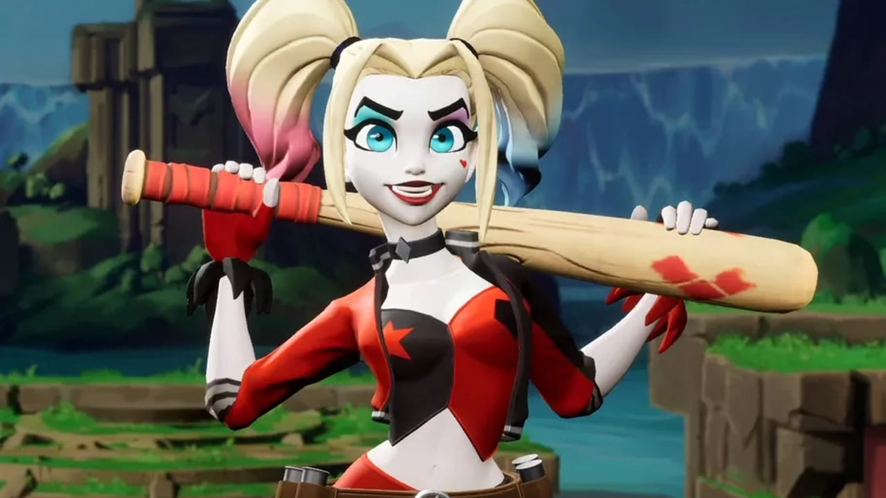

Domine o multiverso! Os 5 melhores personagens de MultiVersus
Alguns lutadores já estão se destacando na pancadaria
Escolher os melhores personagens de MultiVersus pode ser garantia de vitória nas partidas. Apesar do game ainda se encontrar em beta aberto, a comunidade já identificou quais os pontos fortes nas mecânicas de combate e determinados lutadores já são prioridade nos confrontos.
Seja pela mobilidade ou pela quantidade de dano causado, as opções são bem variadas. Mas para exibir isso de forma mais simples, apresentaremos os cinco nomes de maior destaque nos embates até o momento.
Alguns lutadores já estão se destacando na pancadaria
Batman (Pugilista)
Batman se destaca como um dos melhores personagens de MultiVersus graças à sua movimentação. Obviamente, suas outras ferramentas têm extrema importância no combate, mas seu gancho é um diferencial e tanto durante os combates.
O Cavaleiro das Trevas é bastante apelão quando suas habilidades são dominadas. Vale passar um tempo treinando com ele no Laboratório, hein!
Finn (Assassino)
Finn dá uma bela dor de cabeça aos adversários. Um dos protagonistas de A Hora da Aventura, o “humano” e amigo de Jake tem quebrado tudo com sua espada. Seus ataques básicos, junto de sua bolsa de ouro, dificultam os desvios dos golpes e o lutador se destaca nos modos 1v1 e 2v2.
Superman (Tanque)
O Superman é um dos melhores personagens de MultiVersus por dois fatores. O primeiro deles, é sua facilidade em se locomover pelo mapa, algo que facilita no reposicionamento e diminui as chances de ser chutado pra fora do ringue. O segundo, é a entrega de golpes em sequência, capaz de minar a paciência de seus inimigos enquanto causa dano extra quando os combos se encaixam.
Pernalonga (Mago)
O que é que há, velhinho? O Pernalonga é um dos magos mais fortes e versáteis de MultiVersus. Suas habilidades à curta distância são um destaque, assim como as de longa distância, ou seja, ele se encaixa em diversas combinações de equipe no 2v2 e ainda se vira muito bem sozinho no 1v1.
As demais skills do lutador favorecem quem gosta de surpreender ao longo do combate, principalmente ao escapar das ameaças dos adversários. Equipando vantagens como “Tô passando, Velhinho”, o jogador ainda consegue dar dano enquanto se movimenta pelos túneis.
Arlequina (Assassino)
Arlequina é capaz de deixar as lutas caóticas, por isso, é uma das melhores personagens de MultiVersus. Com sua explosão de confete usada na hora certa, a lutadora se torna uma máquina com capacidade destrutiva elevada, principalmente ao empurrar suas vítimas e deixá-las queimando.
Seu bastão, junto de suas outras trapaças, não dão sossego aos oponentes. No campo de batalha, é uma ameaça constante e seu pacote de golpes no ar é apelão demais.
MultiVersus é gratuito e está disponível no PlayStation, Xbox ou PC — com direito a crossplay.
Fonte:MeuPlastation